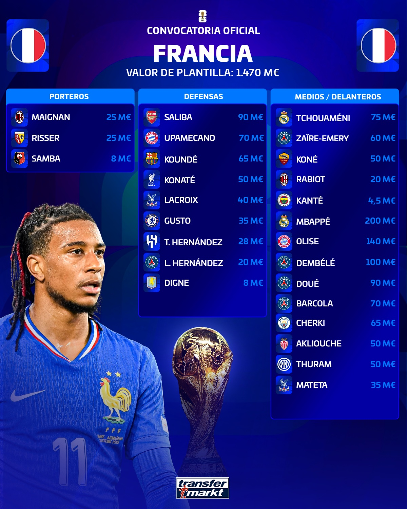
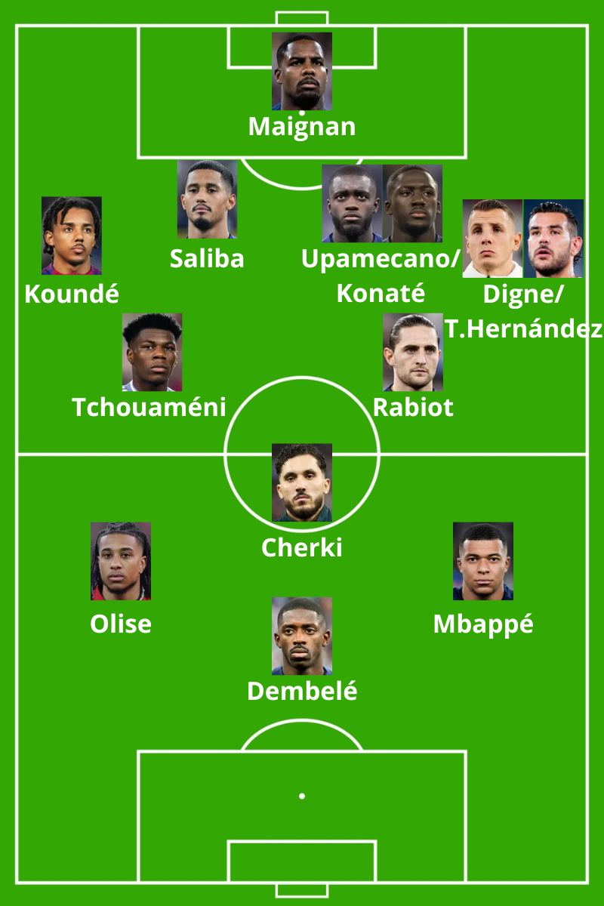

Estructura: 1-4-2-3-1

Ofensivamente, Francia tenderá a estructurarse en salida de tres, incorporando al lateral derecho a la primera línea de construcción y buscando generar amplitud y profundidad con el lateral izquierdo. Este mecanismo se verá favorecido por la movilidad constante de Kylian Mbappé y Ousmane Dembélé, dos piezas fundamentales para desorganizar las estructuras defensivas rivales.
Dembélé tendrá un papel especialmente relevante. Además de su compromiso defensivo como primer defensor tras pérdida, en fase ofensiva asumirá frecuentemente funciones de falso nueve, abandonando la referencia fija en ataque para generar espacios e incorporar a la zona de finalización a mediapuntas y extremos desde segunda línea.
Francia cuenta, probablemente, con la línea ofensiva de mayor potencial del Mundial. Ninguna otra selección reúne una combinación tan amplia de talento, profundidad de plantilla, desequilibrio individual y capacidad de producción ofensiva como la del conjunto dirigido por Didier Deschamps.
En el centro del campo, Aurélien Tchouaméni y Adrien Rabiot parten como favoritos para ocupar la titularidad debido al equilibrio, la solidez y la estabilidad que aportan al equipo. No obstante, Francia dispone de perfiles más creativos y dinámicos, como Warren Zaïre-Emery, cuya participación podría adquirir mayor relevancia en contextos donde sea necesario mejorar la salida de balón o aumentar la capacidad asociativa del equipo. Sin embargo, conociendo la trayectoria y las preferencias de Deschamps, todo apunta a que Rabiot seguirá siendo la apuesta principal en los grandes torneos.
Precisamente, el mediocampo parece ser la línea menos diferencial de esta selección. Francia carece actualmente de un perfil organizador o regista capaz de dirigir el juego desde la base de la jugada, un rol que en etapas anteriores pudo desempeñar Antoine Griezmann desde posiciones más retrasadas. En este contexto, gran parte de la creatividad recaerá sobre futbolistas como Rayan Cherki o Désiré Doué, quienes actuarán en zonas intermedias y cercanas a la mediapunta. Como resultado, es probable que veamos un centro del campo orientado a ofrecer equilibrio, orden y circulación segura, priorizando la estabilidad sobre la creatividad estructural.
En fase defensiva, y siguiendo la tendencia actual del fútbol internacional, Francia se organizará habitualmente en un 1-4-2-4. Será interesante observar el rol de Mbappé dentro de la presión, ya que históricamente ha sido la pieza menos activa en este apartado. Dependiendo del contexto, podrá ocupar posiciones tanto de delantero centro como de extremo durante los momentos de presión.
Una de las grandes decisiones tácticas de Deschamps será determinar la altura del bloque defensivo. En los últimos años ha apostado principalmente por bloques medios, priorizando el control y la solidez estructural. Sin embargo, determinados escenarios de partido podrían exigir una presión más alta y agresiva. En esos contextos, perfiles como Bradley Barcola o Désiré Doué ganarían protagonismo por su capacidad para presionar, su intensidad sin balón y su experiencia reciente en sistemas de presión avanzada.
Como sucede en prácticamente cada gran torneo, Francia parte como una de las máximas candidatas al título. Su extraordinario potencial ofensivo la sitúa entre las selecciones más temidas del campeonato. La gran incógnita será comprobar si logra compensar ciertas carencias estructurales en el mediocampo y mantener la solidez colectiva necesaria para conquistar el Mundial. En cualquier caso, se encuentra claramente entre las cinco principales favoritas para levantar la Copa del Mundo en 2026.